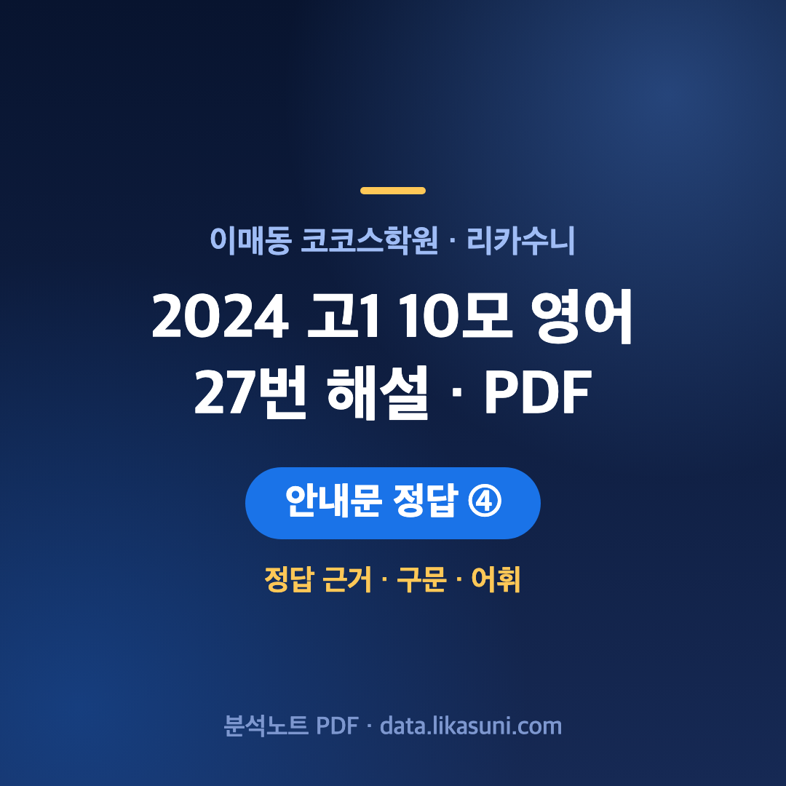
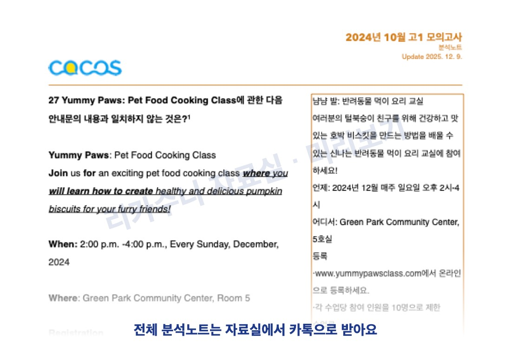

리카수니 분석노트 해설 · 이매동 코코스학원
2024 고1 10모 영어 27번 안내문 해설·분석이에요. (2024 10월 고1 영어 모의고사 27번 · 안내문 내용 불일치 · 정답 ④)
정답 근거, 오답 거르는 법, 구문(관계부사 where · be required · for + 이유/목적), 어휘를 정리했고 분석노트 pdf 받는 곳은 글 아래에 있어요.
안녕하세요, 이매동 코코스학원 리카수니 원장입니다.
학생 요청으로 만든 분석노트를 바탕으로 정리했어요. 시험지를 옆에 펴 놓고 보시면 더 잘 보여요.
| 한눈에 보는 정답 · 시험: 2024년 10월 고1 전국연합학력평가 영어 · 번호: 27번 (Yummy Paws: Pet Food Cooking Class 안내문과 일치하지 않는 것) · 정답: ④ 추가 레시피는 별도로 구매해야 한다 |
반려동물에게 줄 건강한 호박 비스킷 만드는 법을 배우는 반려동물 먹이 요리 교실 안내문이에요.
흐름은 수업 소개 → 일시(2024년 12월 매주 일요일 오후 2~4시) → 장소 → 등록(온라인, 수업당 10명) → 참가비(30달러, 재료 포함) → 유의 사항이에요.
| · 근거: 유의 사항(Note)에 추가 레시피는 무료로 이용할 수 있다(available for free)고 나와요. → '별도로 구매해야 한다'는 안내문과 반대예요. 정답 ④예요. |
| · 일시·장소: 12월 매주 일요일 오후 2~4시, Green Park Community Center 5호실이에요. · 등록: 웹사이트에서 온라인 등록, 수업당 참여 인원은 10명으로 제한돼요. · 참가비: 1인당 30달러, 등록할 때 전액 내야 하고(Full payment is required when registering), 모든 재료가 포함돼요. · 유의 사항: 안전상 이유로 반려동물은 들어올 수 없고, 환불은 수업 48시간 전까지 취소해야 해요. 안내문 문제는 선택지 숫자·요일·free/not allowed 같은 말을 안내문 칸 제목(When·Fee·Note)에서 바로 찾아 한 단어씩 맞춰 보세요. |

▲ 2024 고1 10모 영어 27번 안내문 해설·분석 pdf 분석노트 미리보기
| 1) 관계부사 where: a class where you will learn how to create ~ (~을 배우는 수업) → Join us for an exciting pet food cooking class where you will learn how to create healthy and delicious pumpkin biscuits (2024년 10월 고1 27번) 2) how to + 동사원형 (~하는 방법) 3) Full payment is required when registering (수동태 + when -ing 분사구문) 4) Additional recipes (are) available for free (안내문은 be동사를 자주 생략) 5) For safety reasons (이유) / For a refund (목적), cancel ~ (명령문) |
| 영어 | 뜻 |
|---|---|
| furry | 털이 있는, 털북숭이의 |
| register | 등록하다 / registration 등록 |
| limited to | ~로 제한된 |
| participant | 참여자 |
| full payment | 전액 지불 |
| require | 요구하다 |
| include | 포함하다 |
| ingredient | 재료 |
| additional | 추가의 |
| available | 이용할 수 있는 |
| for free | 무료로 |
| safety | 안전 |
| refund | 환불 |
| cancel | 취소하다 |
| 서술형 대비 분석노트에 문장마다 끊어 읽기와 해석, '일부만 먼저 내거나 수업 당일에 내는 것이 아니라 등록할 때 30달러 전부를 내는 것'처럼 헷갈리기 쉬운 표현 풀이를 넣어 두었어요. Additional recipes are available for free 에서 are 가 생략된 구조도 짚어 두었어요. |
| 📂 2024 고1 10모 영어 27번 분석노트 pdf 받는 법 끊어 읽기·해석·구문이 정리된 pdf 는 리카수니 자료실에서 카카오 로그인 후 카톡으로 받을 수 있고, 다른 번호도 요청할 수 있어요. 회차 자료와 전과목 문제지·정답 pdf 는 같은 페이지 위쪽 회차 메뉴에서 볼 수 있어요. ▶ 2024 고1 10모 영어 자료·분석노트 https://data.likasuni.com/moe/go1/2024-10/eng/ |
Q. 2024 고1 10모 영어 27번 안내문 해설·분석 정답은?
A. ④ 추가 레시피는 별도로 구매해야 한다
Q. 분석노트 pdf 는 어디서 받나요?
A. 리카수니 자료실(data.likasuni.com)에서 카카오 로그인 후 카톡으로 받을 수 있어요. 위 안내의 링크로 이동하세요.
이상 2024 고1 10모 영어 27번 안내문 해설·분석 pdf 정리였어요. 궁금한 점은 댓글로 남겨 주세요.
| 🏫 이매동 코코스학원 안내 분당 이매동 코코스학원은 초등·중등·고등 영어와 수학을 가르쳐요. 모의고사·수능특강·내신 대비가 궁금하시면 편하게 문의해 주세요. · 홈페이지: https://www.cocosedu.co.kr/ · 주소: 경기 성남시 분당구 판교로 476 2층 |
#2024고110모영어 #2024고110모영어분석 #고110모영어 #고110모27번 #2024년10월모의고사 #2024년10월고1영어 #10모영어안내문 #안내문내용일치 #YummyPaws #영어분석노트 #이매동영어학원 #코코스학원 #리카수니